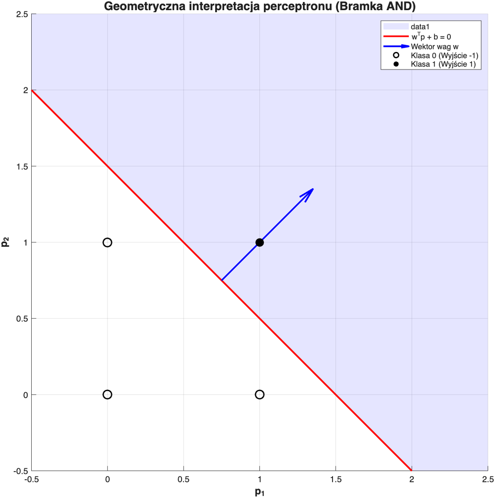
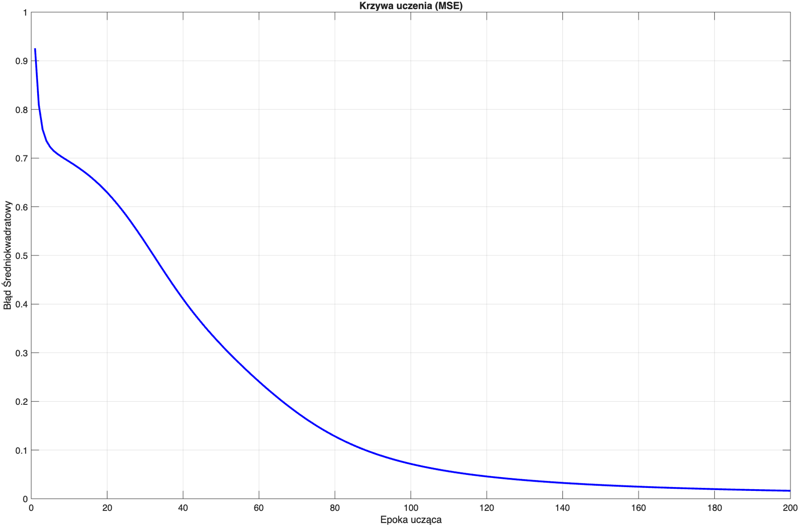
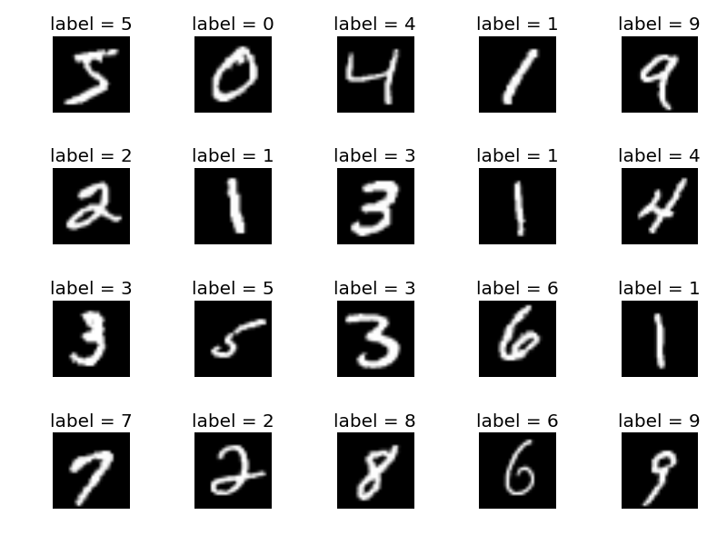
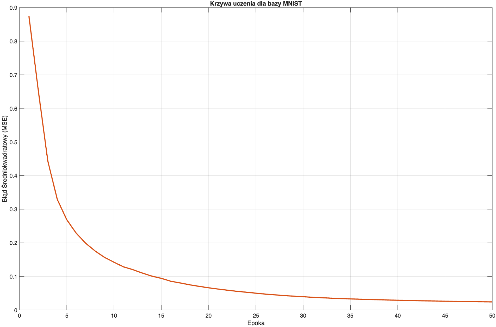
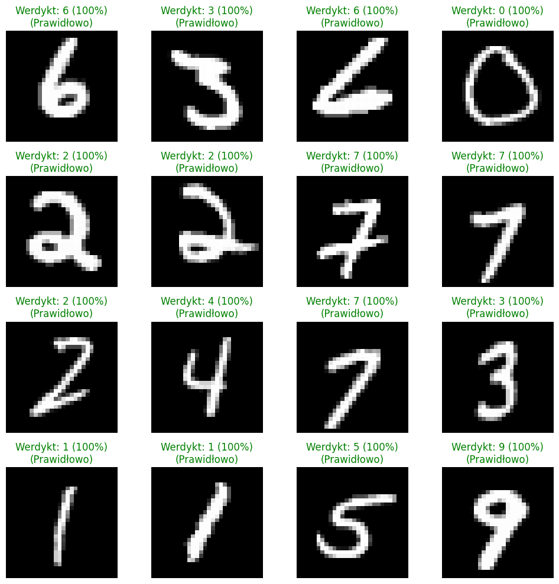

Sieći neuronowe (NN) to złożone i wielowarstwowe systemy obliczeniowe, powstają one poprzez połączenie podstawowych jednostek, które nazywamy neuronami. Opisywane przeze mnie rodzaje sieci bedą rozwinięciem ideii NN. Aby zrozumieć działanie sieci i jej zamysł, należy sie skupić na pojedyńczym jej elemencie.
System nerwowy złożony jest z sieci neuronów, które komunikują się miedzy sobą jednokierunkowo. Sygnał generowany przez jądro komórki jest wysyłany przez akson jednej komórki i podrożując przez synapse jest odbierany przez dendryty komórek następnych. Do przekazania impulsu dalej w sieć neuronów, zauważono że do ciała komórki musi zostać dostarczona sumarycznie ilość impulsów przekraczająca określoną wartość. Model matematyczny w literaturze został pokazany w 1943(McCulloch1943?). Koncepcja ta została rozwinięta o element uczenia przez Rosenblatta w 1958 roku. Architektura zakładała modyfikowalne wagi synaptyczne, co pozwala sztucznemu neuronowi na adaptacje. Neuron stał się podstawową jednostką obliczeniową, która przekształca wszystkie dochodządze do niego sygnały w jeden wyjściowy.
Dla współczesnego neuronu posiadającego \(n\) wejść, sygnał wyjściowy \(y\) opisany jest równaniem: \[\begin{equation} y = f\left(\sum_{i=1}^{n} w_i x_i + b\right) \end{equation}\]
\(w_1\) to waga lącząca neuron poprzedniej warstwy.
\(x_1\) wartość neuronu warstwy poprzedniej.
\(b\) obciążenie.
\(f\) funkcja aktywacji.
Elementem wyróżniającym architekturę perceptronową jest zastosowana w nim dyskretna funkcja aktywacji \(\text{sgn}\). \[\begin{equation} \text{sgn}(x) = \begin{cases} 1 & \text{dla } x > 0 \\ 0 & \text{dla } x = 0 \\ -1 & \text{dla } x < 0 \end{cases} \end{equation}\]
Na powyższym schemacie widać w praktyce wzór (1). W najprostszej postaci perceptronu, mamy doczynienia z jedym perceptronem, do którego dochodzą wejscia, poprzez wagi. W celu ułatwienia dalszego rozumienia tekstu przyjęta przezemnie nomenklatura wag wygląda następująco:
\(w_{ds}^l\)
\(l\) warstwa neuronu, z którego wychodzą wagi.
\(d\) neuron do którego trafia waga.
\(s\) neuron, którego waga wychodzi.
Problem, który architektura perceptronu rozwiązuje, można przedstawić wizualnie w układzie współrzędnych. Celem takiego logicznego układu jest binarna klasyfikacja z pomocą funkcji aktywacji sgn. Obliczenia w przód mają na celu wyznaczenie prostej, zwaną granicą w układzie współrzędnych. Wydzielone zostają dwie klasy, powyżej tej granicy, perceptron jest aktywowany, na wyjscie zadaje jedynkę, poniżej zadaje minus jeden.
Regułę działania perceptronu, łatwo zrozumieć na perceptronie stworzonym na kształt Bramki logicznej AND. Schemat na rysunku 1. odwzorowywuje tą właśnie architekturę. 2 wejścia i jedno wyjście. Oczekiwane wyniki w zależności od wartosci wejsciowych: \[\begin{equation} \left\{ \mathbf{p}_1 = \begin{bmatrix} 0 \\ 0 \end{bmatrix}, t_1 = -1 \right\} \quad \left\{ \mathbf{p}_2 = \begin{bmatrix} 0 \\ 1 \end{bmatrix}, t_2 = -1 \right\} \quad \left\{ \mathbf{p}_3 = \begin{bmatrix} 1 \\ 0 \end{bmatrix}, t_3 = -1 \right\} \quad \left\{ \mathbf{p}_4 = \begin{bmatrix} 1 \\ 1 \end{bmatrix}, t_4 = 1 \right\} . \end{equation}\] zgodnie z rysunkiem 1. wartość wyjściowa perceptronu:
\(a = \mathit{sgn}(w_{11}^1*p_1 + w_{12}^1*p_2 +b)\)
Celem jest odnalezienie takich wag i biasu, aby wyznaczona prosta graniczna poprawnie odzielała wartości aktywacji neuronu 1 i -1.
P = [0, 0, 1, 1;
0, 1, 0, 1];
W = [2, 2];
b = -3;
net_input = W * P + b;
a = sign(net_input); Wynikiem działania powyższego skrytpu jest wektor przewidywań wartości \(\bm{a} = [-1, -1, -1, 1]\)

Omawiana we wstępnie adaptacyjność wynika z możliwości odpowiedniego dobierania i modyfikowania wag perceptronu. W przykładzie bramki AND, proces nauki i modyfikacji tych zmian został celowo pominięty, a zastosowane w nim wagi były poprzednio dobrane. Reguła uczenia perceptronu, polega na aktualizacji wag w zależności od błędu, osiągnietęgo po kroku w przód. \[\begin{equation} e = t-a \end{equation}\] Funkcja aktywacji sgn, daje 3 możliwości wyniku: \[\begin{equation} e = -1 \end{equation}\] \[\begin{equation} e = 1 \end{equation}\] \[\begin{equation} e = 0 \end{equation}\] Dzięki czemu, możemy uogólnić zapis wzoru na nowe wagi w zależności od wynikowego błędu: \[\begin{equation} W_{new} = W_{old} + e p^T \end{equation}\]
W celu pokazania kroku aktualizacji wag, parametry początkowe zostaną zainicjowane zerami. \[\begin{equation} \bm{W}^{(0)} = \begin{bmatrix} 0 & 0 \end{bmatrix}, \quad b^{(0)} = 0 \end{equation}\]
Krok 1: Aktualizacja dla wzorca uczącego
Wyobraźmy sobie sytuację, w której na wejście sieci trafia punkt \(\bm{p}_1 = [1, 1]^T\). Dla bramki logicznej
AND pożądaną odpowiedzią jest stan wysoki \(t_1 = 1\). Sieć oblicza wartość pobudzenia
(krok w przód): \[\begin{equation}
net = \bm{W}^{(0)}\bm{p}_1 + b^{(0)} = \begin{bmatrix} 0 & 0
\end{bmatrix} \begin{bmatrix} 1 \\ 1 \end{bmatrix} + 0 = 0
\end{equation}\] Ponieważ pobudzenie nie przekroczyło zera (\(net \le 0\)), funkcja aktywacji generuje na
wyjściu sygnał \(a = 0\). Skutkuje to
powstaniem dodatniego błędu predykcji: \[\begin{equation}
e = t_1 - a = 1 - 0 = 1
\end{equation}\] Algorytm dokonuje modyfikacji parametrów (reguła
delta), korygując macierz wag oraz obciążenie: \[\begin{equation}
\bm{W}^{(1)} = \bm{W}^{(0)} + e\bm{p}_1^T = \begin{bmatrix} 0 &
0 \end{bmatrix} + (1)\begin{bmatrix} 1 & 1 \end{bmatrix} =
\begin{bmatrix} 1 & 1 \end{bmatrix}
\end{equation}\] \[\begin{equation}
b^{(1)} = b^{(0)} + e = 0 + 1 = 1
\end{equation}\]
Powyższa procedura jest iterowana przez cały zbiór danych tak długo, aż sieć przestanie popełniać błędy. Zmiany w wektorze wag dążą do takiego ułożenia granicy decyzyjnej, która odseparuje punkt \([1,1]\) od pozostałych kombinacji.
Zaprezentowany w poprzednim rozdziale problem bramki logicznej AND jest problemem liniowo separowalnym, który prosta jedno lub wielo neuronowa sieć perceptronowa jest w stanie sobie poradzić. Problem narodził się, kiedy spróbowano zastosować perceptron do rozwiązania bramki logicznej XOR, którego nieliniowość uniemożliwiła rozwiązanie siecią perceptronową. Problem ten rozwiązano poprzez dodanie warstw ukrytych. Dodanie warstw ukrytych wymusiło zmianę funkcji aktywacji na nie liniową. W przeciwnym wypadku, dodanie warstwy ukrytej sprowadziło by się do bardziej skomplikowanej kombinacji liniowej, co nie rozwiązało by problemu. Dodanie nieliniowości i dodatkowych warstw, zdecydowanie utrudniło aktualizacje parametrów sieci. Reguły wstecznej propagacji błędu i aktualizacji wag zostały zdefiniowane 30 lat poźniej (rumelhart1986learning?).
W klasycznym Perceptronie wielowarstwowym używaną funckją aktywacji jest sigmoid. Funkcja ta przekształca wartości, tak aby znajdowały się w przedziale \((0,1)\). \[\begin{equation} \sigma(x) = \frac{1}{1+e^{-x}} \end{equation}\] Prosta pochodna funkcji sigmoid, ułatwia skomplikowane obliczenia wstecznej propagacji błedu, stąd jest częstym wyborem w architekturach sieci neuronowych. Pochodna prezentuje się następująco \[\begin{equation} \frac{d\sigma}{d x} = \sigma(x) * (1-\sigma(x)) \end{equation}\]
Aby możliwa była ocena wyników perceptronu wielowarstwowego, zdefiniowano funkcje straty. Jest to matematyczna miara błędu, często nazywana również funkcją kosztu. Występuje w wielu formach, ale zawsze jej zadaniem jest określenie jak bardzo przewidywania sieci \(\hat{y}\) różnią się od wartości oczekiwanych \(y\). W pierwszym perceptronie wielowarstwowym stosowaną miarą był bład średniokwadratowy (MSE). Dla wektora warstwy wyjściowej perceptronu funkcje straty E definiuje się następująco: \[\begin{equation} E = \frac{1}{2} \sum_{i=1}^{k} (y_i-\hat{y_i})^2 \end{equation}\] gdzie \(k\) to liczba neuronów w warstwie wyjściowej. Kwadrat różnicy gwarantuje, że błąd będzie dodatni i proporcjonalnie większy w przypadku dużej różnicy.
Proces uczenia perceptronu wielowarstwowego jest procedurą iteracyjną, w której każda z iteracji jest podzielona na 2 fazy. Fazę propagacji sygnału w przód i fazę wstecznej propagacji błędu.
Faza propagacji w przód to proces podczas którego perceptron dokonuje predykcji na podstawie swoich parametrów. Transformacja sygnału wejściowego opiera się na serii obliczeń powtórzonej \(l-1\) razy gdzie \(l\) to liczba warst perceptronu. Pierwszą częścią obliczeń dla dowolnej warstwy \(l\): \[\begin{equation} \bm{z}^{(l)} = \bm{W}^{(l)}\bm{a}^{(l-1)} + \bm{b}^{(l)} \end{equation}\] gdzie \(\bm{W}^{(l)}\) to macierz wag połączeń wchodzących do warstwy \(l\), a \(\bm{b}^{(l)}\) to wektor (biasów). \(\bm{a}^{(0)}\) to sygnał doprowadzony do neuronu.
Następnie, aby wprowadzić do modelu nieliniowość, wektor sum ważonych przepuszczany jest przez funkcję aktywacji (np. opisaną wcześniej funkcję sigmoidalną). \[\begin{equation} \bm{a}^{(l)} = \sigma(\bm{z}^{(l)}) \end{equation}\] Wektor wyjściowy ostatniej warstwy sieci stanowi ostateczną predykcję modelu, oznaczaną jako \(\bm{\hat{y}}\).
W wyniku zakończenia propagacji w przód otrzymujemy, predykcję \(\hat{y}\), na podstawie której funkcja straty np. wspomniana wcześniej MSE wylicza bład całkowity E. Zadaniem algorytmu propagacji wstecznej, jest odpowiedź na pytanie: jak zmiana pojedyńczych warstw wpływa na końcowy błąd sieci. Formalnie celem algorytmu jest znalezienie gradientu funkcji E \(\nabla E\), czyli wektora kierunku w maksymalnego wzrostu funkcj. Jako, że funkcja straty \(E\) jest funkcja wielu zmiennych rozpisując kroku graidientu wykorzystujemy pochodną cząstkową \(\frac{\partial L}{\partial w_{ij}}\). Ponieważ błąd obliczany jest na końcu sieci, a elementy za niego odpowiedzialne, znajdują się w jej wnętrzu, do wyznaczania posczególnych elementów wektora gradientu, wykorzystuję się regułę łańcuchową. Wpływ na błąd wagi łączącej neuron \(j\) z neuronem \(i\) w warstwie \(l\) można zapisać w następujący sposób: \[\begin{equation} \frac{\partial E}{\partial w_{ij}^{(l)}} = \frac{\partial E}{\partial a_i^{(l)}} \cdot \frac{\partial a_i^{(l)}}{\partial z_i^{(l)}} \cdot \frac{\partial z_i^{(l)}}{\partial w_{ij}^{(l)}} \end{equation}\]
Każdy z tych czynników odnosi się do konkretnego równania zdefiniowanego we wcześniejszych krokach:
\(\frac{\partial E}{\partial a_i^{(l)}}\) – określa, jak przewidywania sieci wpływają na funkcje straty
\(\frac{\partial a_i^{(l)}}{\partial z_i^{(l)}}\) – to pochodna funkcji aktywacji \(\sigma'(z)\)(10).
\(\frac{\partial z_i^{(l)}}{\partial w_{ij}^{(l)}}\) – to pochodna sumy neuronu.
Jeśli oznaczymy dwa pierwsze elementy powyższego równania za pomocą (\(\delta_i^{(l)}\)) to ostateczny wzór na pochodną cząstkową względem konkretnej wagi przyjmuje taką postać. \[\begin{equation} \frac{\partial E}{\partial w_{ij}^{(l)}} = \delta_i^{(l)} \cdot a_j^{(l-1)} \end{equation}\] (\(\delta_i^{(l)}\)) to błąd lokalny sygnału warstwy \(l\) (Zurada1992?)
Mając tak obliczone błędy względem wag sieci, za pomocą odpowiedniego algorytmu optymalizacyjnego dokonywana jest aktualizacja wag, co przesuwa całą sieć w stronę minimum funkcji straty.
Aby zilustrować mechanikę przepływu sygnału zdefiniowaną w poprzednich rozdziałach, przeanalizujmy konkretny przykład perceptronu wielowarstwowego. Przyjmijmy architekturę składającą się z warstwy wejściowej przyjmującej 9 cech, pojedynczej warstwy ukrytej z 4 neuronami oraz warstwy wyjściowej dokonującej klasyfikacji do 3 oddzielnych klas.
Sygnał wejsciowy to wektor 9-elementowy \(X\) \[\begin{equation} \bm{X}= [x_1, x_2, \dots, x_9]^T \end{equation}\] Wektor wartości oczekiwanych \[\begin{equation} \bm{Y}=\begin{bmatrix} 0&0&1 \end{bmatrix}^T \end{equation}\] Macierz wag pierwszej warstwy ma wymiary \(4\times9\) \[\begin{equation} \bm{W^{(1)}} = \begin{bmatrix} w_{11}^1 & w_{12}^1 & \dots & w_{19}^1 \\ w_{21}^1 & \dots & \dots & \dots\\ \dots & \dots & \dots & \dots \\ w_{41}^1 & \dots & \dots&w_{49}^1 \end{bmatrix} \end{equation}\]
Macierz wag drugiej warstwy ma wymiary \(3\times4\) \[\begin{equation} \bm{W^{(2)}} = \begin{bmatrix} w_{11}^2 & w_{12}^2 & \dots & w_{14}^2 \\ w_{21}^2 & \dots & \dots & \dots\\ w_{31}^2 & \dots & \dots&w_{34}^2 \end{bmatrix} \end{equation}\] Wektor predykcji \(\bm{\hat{Y}}\) jest 3-elementowy \[\begin{equation} \bm{X}= [\hat{y_1}, \hat{y_2}, \hat{y_3}]^T \end{equation}\]
Wartości wag muszą zostać losowo zainicjowane, jednowartosciowa macierz wag, może doprowadzić do nie optymalnego procesu uczenia się sieci. Macierze \(\bm{W^1}\) i \(\bm{W^2}\) zostały zainijowane w następujący sposób: \[\begin{equation} \bm{W}^{1} = \begin{bmatrix} 0.1 & 0.3 & -0.3 & -0.1 & 0.1 & 0.8 & 0.8 & 0.8 & 0.1 \\ 0.2 & 0.1 & -0.4 & 0.1 & 0.1 & 0.1 & 0.7 & 0.1 & -0.1 \\ -0.3 & 0.7 & 0.8 & 0.8 & -0.8 & -0.9 & 0.1 & 0.1 & -0.0 \\ -0.4 & 0.1 & 0.7 & 0.9 & 0.1 & 0.1 & 0.9 & 0.9 & 0.1 \end{bmatrix} \end{equation}\]
\[\begin{equation} \bm{W}^{2} = \begin{bmatrix} 0.3 & 0.7 & 0.1 & -0.1 \\ 0.1 & 0.4 & 0.8 & -0.4 \\ -0.2 & -0.9 & 0.9 & 0.6 \end{bmatrix} \end{equation}\]
Wektor sygnału wejściowego \(\bm{X}\) \[\begin{equation} \bm{X} = \begin{bmatrix} 1 & 1 & 1 &0 &1 &1 &1 &1 &1 \end{bmatrix} \end{equation}\]
Pierwszą transformacje sygnału można opisać równaniem: \[\begin{equation} z^1 = \bm{W}^1 \cdot \bm{X} =\begin{bmatrix} 2,7\\ 0,8\\ -0,3\\ 2,5 \end{bmatrix} \end{equation}\] Wektor wynikowy, to surowe wartości sumy neuronów, następnym krokiem jest przepuszczenie tych wyników przez nieliniową funkcję aktywacji np. sigmoid.
Należy pamiętać, że funkcje aktywacji stosujemy do każdego elementu wektora, co możemy zapisać w ten sposób: \[\begin{equation} \bm{a} = \sigma(\bm{Z}) = \begin{bmatrix} \sigma(z_1) \\ \sigma(z_2) \\ \vdots \\ \sigma(z_n) \end{bmatrix} \end{equation}\] Dla wektora \(Z^1\) wektor aktywacji warstwy ukrytej wygląda następująco: \[\begin{equation} \sigma(\bm{Z^{(1)}}) = \bm{A}^{(1)} = \begin{bmatrix} 0,9370 \\ 0,6900 \\ 0,4256 \\ 0,9241 \end{bmatrix} \end{equation}\]
Aby otrzymać wektor aktywacji warstwy wyjsciowej, kroki 28 i 30 musimy powtórzyć. \[\begin{equation} z^{(2)} = \bm{W}^{(2)} \cdot \bm{A} =\begin{bmatrix} 0,7142\\ 0,3405\\ 0,129 \end{bmatrix} \end{equation}\] \[\begin{equation} \sigma(\bm{Z^{(2)}) = \bm{Y}^{(2)} = \begin{bmatrix} 0,67 \\ 0,5843 \\ 0,5322 \\ \end{bmatrix} \end{equation}\]
Otrzymany wektor jest wektorem predykcji sieci. Ostatnim krokiem propagacji w przód jest obliczenie wektora błędu. W tym celu zostanie wykorzystana opisywana wcześniej funkcja błędu średniokwadratowego. Dla każdego z błędów jest obliczany z osobna.
\[\begin{equation} E = \frac{1}{2} (y_1 - \hat{y}_1)^2 \end{equation}\]
W celu większej klarowności propagacji wstecznej, równanie gradientu pierwszej wagi w warstwie ukryty został przedstawiony skalarnie: \[\begin{equation} \frac{\partial E}{\partial w_{11}^{(1)}} = \left( \sum_{k=1}^{3} \frac{\partial E}{\partial \hat{y}_k} \cdot \frac{\partial \hat{y}_k}{\partial z_k^{(2)}} \cdot \frac{\partial z_k^{(2)}}{\partial a_1^{(1)}} \right) \cdot \frac{\partial a_1^{(1)}}{\partial z_1^{(1)}} \cdot \frac{\partial z_1^{(1)}}{\partial w_{11}^{(1)}} \end{equation}\] \[\begin{equation} \frac{\partial E}{\partial w_{11}^{(1)}} = \left( \sum_{k=1}^{3} (\hat{y}_k-y_k) \cdot \hat{y}_k(1 - \hat{y}_k) \cdot w_{k1}^{(2)} \right) \cdot a_1^{(1)}(1 - a_1^{(1)}) \cdot x_1 \end{equation}\] Co po podstawieniu wartości daje wynik: \[\begin{equation} w_{11}^1=-0.0048 \end{equation}\] W ten sposób można wyliczyć pochodne funkcji straty w zależności od każdej z wag. Jednak liczenie tego skalarnie jest nieefektywne obliczeniowo, dlatego te operacje wykonywane są na macierzach wykorzystując do tego pojęcie błędu lokalnego(\(\bm{\delta}\)). Błąd lokalny dla warstwy 2 wygląda następująco. \[\begin{equation} \bm{\delta}^{(2)} = (\bm{y} - \bm{\hat{y}}) \odot \sigma'(\bm{z}^{(2)}) \end{equation}\]
Prawdziwy sens takiego rozwiązania, można zaobserwować przy obliczaniu delty dla warstwy ukrytej. Zamiast ręcznego sumowania błędów, wektor \(\bm{\delta}^{(1)}\) jest wynikiem mnożenia: \[\begin{equation} \bm{\delta}^{(1)} = \left( (\bm{W}^{(2)})^T \bm{\delta}^{(2)} \right) \odot \sigma'(\bm{z}^{(1)}) \end{equation}\]
Mając wyznaczone wektory błędów lokalnych dla każdej warstwy, macierze gradientów wyznacza się mnożąc wektor delty przez transponowany wektor sygnału wejściowego do danej warstwy \[\begin{equation} \nabla_{\bm{W}^{(2)}} E = \bm{\delta}^{(2)}\cdot (\bm{A}^{(1)})^T \end{equation}\] \[\begin{equation} \nabla_{\bm{W}^{(1)}} E = \bm{\delta}^{(1)}\cdot \bm{X}^T \end{equation}\] Wracając do przykładu wektor \(\bm{\delta}^{(2)}\) wygląda następująco \[\begin{equation} \bm{\delta}^{(2)} = \begin{bmatrix} -0,148\\ -0,142\\ 0,116 \end{bmatrix} \end{equation}\] wektor delty ukrytej \(\bm{\delta}^{(1)}\) \[\begin{equation} (\bm{W}^{(1)})^T \cdot \bm{\delta}^{(2)} \odot \sigma'(\bm{z}^{(1)}) = \begin{bmatrix} -0,0048\\ -0,0567\\ 0,0058\\ 0,0099 \end{bmatrix} \end{equation}\] Finalnie posiadając juz wszystkie delty możemy obliczyć gradienty wag gradient dla \(W^{(1)}\) \[\begin{equation} \nabla{\bm{W}^{(1)}} =\bm{\delta}^{(1)} \cdot\bm{W}^{(1)} \end{equation}\] \[\begin{equation} \begin{bmatrix} -0.0048 & -0.0048 & -0.0048 & 0 & -0.0048 & -0.0048 & -0.0048 & -0.0048 & -0.0048 \\ -0.0567 & -0.0567 & -0.0567 & 0 & -0.0567 & -0.0567 & -0.0567 & -0.0567 & -0.0567 \\ -0.0058 & -0.0058 & -0.0058 & 0 & -0.0058 & -0.0058 & -0.0058 & -0.0058 & -0.0058 \\ 0.0099 & 0.0099 & 0.0099 & 0 & 0.0099 & 0.0099 & 0.0099 & 0.0099 & 0.0099 \end{bmatrix} \end{equation}\] gradient dla \(W^{(2)}\) \[\begin{equation} \nabla{\bm{W}^{(2)}} =\bm{\delta}^{(2)} \cdot\bm{X} = \begin{bmatrix} -0.1388 & -0.1022 & -0.0630 & -0.1369 \\ -0.1330 & -0.0979 & -0.0604 & -0.1312 \\ 0.1091 & 0.0804 & 0.0496 & 0.1076 \end{bmatrix} \end{equation}\]
Z tak wyliczonym gradientem funkcji straty jesteśmy w stanie odpowiednio zaktualizować wagi. Należy jednak pamiętać o tym, że gradient to kierunek maksymalnego wzrostu funkcji, a rozchodzi się o minimalizację funkcji straty. Dlatego gradienty należy odjąć od macierzy wag. Do zmiany wag wykorzystuje się algorytm optymalizacyjny, który przyjmuje wiele form, a najprostsza z nich i ta, która zostanie zastosowana nazywa się SGD (Stochastic gradient descent). Zakłada, że po każdej iteracji wagi zostają zaktualizowane. W aktualizacji wag bierze udział parametr, nazywany learning rate. Ma on za zadanie zapobiegnięciu zbyt szybkich zmian, które mogły by prowadzić do pominięcia minimum, lub utknięcia w minimum lokalnym. Używając SGD i tak nie można mieć pewności czy trening nie skończy się w minimum lokalnym. Wzór na aktualizacje wag: \[\begin{equation} \bm{W}^{nowe} = \bm{W}^{stare} -\eta\nabla W^{stare} \end{equation}\] gdzie \(\eta\) to wspołczynnik uczenia, w naszym przykładzie dla uprosczenia został przyjęty \(\eta = 1\). Zgodnie z teorią, macierze wag po aktualizacji wyglądają następująco: \[\begin{equation} \bm{W}^{(1)} = \begin{bmatrix} 0.1048 & 0.3048 & -0.2952 & -0.1000 & 0.1048 & 0.8048 & 0.8048 & 0.8048 & 0.1048 \\ 0.2567 & 0.1567 & -0.3433 & 0.1000 & 0.1567 & 0.1567 & 0.7567 & 0.1567 & -0.0433 \\ -0.2942 & 0.7058 & 0.8058 & 0.8000 & -0.7942 & -0.8942 & 0.1058 & 0.1058 & 0.0058 \\ -0.4099 & 0.0901 & 0.6901 & 0.9000 & 0.0901 & 0.0901 & 0.8901 & 0.8901 & 0.0901 \end{bmatrix} \end{equation}\]
\[\begin{equation} \bm{W}^{(2)} = \begin{bmatrix} 0.4388 & 0.8022 & 0.1630 & 0.0369 \\ 0.2330 & 0.4979 & 0.8604 & -0.2688 \\ -0.3091 & -0.9804 & 0.8504 & 0.4924 \end{bmatrix} \end{equation}\]
Pojedyńcze prezjśie sygnału w przód i tył nie jest wystarczające do rozwiązania nieliniowego problemu klasyfikacji, dlatego w celu osiągnięcia pożądanych wyników pokazana procedura jest powtarzana iteracyjnie. Powyższe obliczenia umieszcza się w pętli, nazywanej pętlą treningową. Warto wprowadzić pojęcie epoki, która definiowana jest jako pełne przejście algorytmu uczącego przez zbiór danych treningowych. Wykres wartośći funkcji straty od epoki prezentuje się następująco:

Z wykresu widać ze dopiero po 100 epokach przewidywania sieci, nie odbiegają diametralnie od warstości oczekiwanych. Stan macierzy \(\bm{W}^{(1)}\) i \(\bm{W}^{(2)}\) po 200 epokach: \[\begin{equation} \bm{W}^{(1)} = \begin{bmatrix} -0.4525 & 0.3004 & -0.8525 & -0.1000 & -0.4525 & 3.0396 & 0.2475 & 0.2475 & -0.4525 \\ -0.2722 & 4.0988 & -0.8722 & 0.1000 & -0.3722 & 1.4123 & 0.2278 & -0.3722 & -0.5722 \\ -0.1349 & 1.1933 & 0.9651 & 0.8000 & -0.6349 & -4.4999 & 0.2651 & 0.2651 & 0.1651 \\ -0.4185 & -3.5950 & 0.6815 & 0.9000 & 0.0815 & 1.3495 & 0.8815 & 0.8815 & 0.0815 \end{bmatrix} \end{equation}\]
\[\begin{equation} \bm{W}^{(2)} = \begin{bmatrix} 2.1091 & 1.5979 & -4.4859 & -1.0830 \\ -2.3557 & 1.4241 & 2.6968 & -4.5643 \\ -1.5030 & -4.3578 & 1.2332 & 2.4495 \end{bmatrix} \end{equation}\]
Przewidywania sieci po wytrenowaniu, powstałe w tak zwanej fazie odtwarzania, nie wyliczamy błędów i pomijamy propagacje wsteczną.
| Rozpoznawana Klasa | Wektor Oczekiwany (\(\bm{y}\)) | Predykcja Sieci (\(\bm{\hat{y}}\)) |
|---|---|---|
| Klasa 1 | \([1, 0, 0]^T\) | \([0.9175,\ 0.0696,\ 0.0153]^T\) |
| Klasa 2 | \([0, 1, 0]^T\) | \([0.0827,\ 0.9066,\ 0.0767]^T\) |
| Klasa 3 | \([0, 0, 1]^T\) | \([0.0246,\ 0.0821,\ 0.9188]^T\) |
W celu sprawdzenia wykresu zależności liczby epok od błędu Tabelę 1 powtórzono dla klasyfikacji po 20 epokach treningowych.
| Rozpoznawana Klasa | Wektor Oczekiwany (\(\bm{t}\)) | Predykcja Sieci (\(\bm{\hat{y}}\)) |
|---|---|---|
| Klasa 1 | \([1, 0, 0]^T\) | \([0.3586,\ 0.3092,\ 0.2733]^T\) |
| Klasa 2 | \([0, 1, 0]^T\) | \([0.2877,\ 0.4020,\ 0.4141]^T\) |
| Klasa 3 | \([0, 0, 1]^T\) | \([0.2813,\ 0.3682,\ 0.4864]^T\) |
Zestawienie ze sobą powyższych tabel, pokazuje sensownośc wykresu 2. Predykcje sieci nie są wystarczające, aby można było mówić o poprawnej klasyfikacji.
Powyższy przykład działania perceptronu wielowarstwowego, jest przykładem elementarnym. 9-elementowa warstwa wejsciowa, nie występuje po za przykładami akademickimi. Pomimo tego jedno przejście sygnału w przód i w tył jak pokazano jest dość wymagające obliczeniowo. W jednej iteracji wykonywanych jest około 300 podstawowych operaci matematycznych. Co sprawia, że liczenie tego na kartce nawet dla tak prostych przykładów jak zaprezentowana topologia sieci 9-4-3, staje się poprostu niemożliwe. To powiedziawszy w celu rozwiązania tych obliczeń wybrano środowisko matlab. Główna pętla obliczeniowa, odpowiadająca za przepływ sygnału w przód i tył:
for epoka = 1:epoki
blad_epoki = 0;
for i = 1:size(X, 2)
x_in = X(:, i);
y = Y(:, i);
z_1 = W_1 * x_in;
a_1 = 1./(1+exp(-z_1));
z_2 = W_2 * a_1;
a_2 = 1./(1+exp(-z_2));
delta_wyjscie = (a_2 - d) .* a_2 .* (1 - a_2);
delta_ukryta = W_2' * delta_wyjscie .* a_1 .* (1 - a_1);
Gradient_W_1 = delta_ukryta * x_in';
Gradient_W_2 = delta_wyjscie * a_1';
W_1 = W_1 - lr * Gradient_W_1;
W_2 = W_2 - lr * Gradient_W_2;
end
endAnalizowany powyżej przykład jak wsponimałem jest elementarny. W celu zweryfikowania przedstawionego rozumienia, perceptron wielowarstwowy zostanie wytrenowany do klasyfikacji obrazów cyfr ze zbioru danych MNIST.
Zbiór danych MNIST składa się z 60000 tysięcy obrazów odręcznie pisanych cyfr o wymiarach \(28\times28\) wyglądających następująco:

Celem jest poprawna klasyfikacja cyfry znajdującej się na obrazie.
Wielowarstwowy perceptron operuje na wektorze danych, dlatego każdą z macierzy należy odpowiednio przygotować, przekształcając ją na wektor o długości \(28\times28=784\) warstwa wyjsciowa musi byc wektorem o dlugości \(10\), ze względu na 10 klas do klasyfikacji. Zdecydowano się na jedną warstwe ukrytą z 64 neuronami. Pętla treningowa jest identyczna jak pokazano powyżej, różnią jedynie się rozmiary macierzy które uczestniczą w mnożeniach. \[\begin{equation} \bm{X} = 784\times1 \end{equation}\] \[\begin{equation} \bm{W}^{(1)} = 64\times784 \end{equation}\] \[\begin{equation} \bm{W}^{(2)} = 10\times64 \end{equation}\]
Tak jak dla elementarnego przykładu, tu też możemy zaobserwować zależność malejącego błędu wraz z każda epoką.

W celu zobrazowania mechanizmu decyzyjnego, poddano analizie surowe wektory wyjściowe \(\bm{\hat{y}}\) dla pięciu losowo wybranych próbek testowych.
Przykład 1 (Oczekiwana cyfra: 4): \[\begin{equation*} \bm{\hat{y}}_1 = [0.0011,\ 0,\ 0,\ 0.0006,\ \mathbf{0.9952},\ 0.0281,\ 0.0129,\ 0.0002,\ 0.0046,\ 0.0022]^T \end{equation*}\]
Przykład 2 (Oczekiwana cyfra: 6): \[\begin{equation*} \bm{\hat{y}}_2 = [0.0341,\ 0,\ 0.0012,\ 0,\ 0.0031,\ 0.0012,\ \mathbf{0.9952},\ 0,\ 0.0001,\ 0.0009]^T \end{equation*}\]
Przykład 3 (Oczekiwana cyfra: 2): \[\begin{equation*} \bm{\hat{y}}_3 = [0.0001,\ 0.0001,\ \mathbf{0.9991},\ 0.0022,\ 0,\ 0,\ 0.0030,\ 0.0059,\ 0.0007,\ 0]^T \end{equation*}\]
Przykład 4 (Oczekiwana cyfra: 2): \[\begin{equation*} \bm{\hat{y}}_4 = [0.0002,\ 0,\ \mathbf{0.9956},\ 0.0008,\ 0.0005,\ 0,\ 0.1040,\ 0,\ 0,\ 0.0005]^T \end{equation*}\]
Przykład 5 (Oczekiwana cyfra: 7): \[\begin{equation*} \bm{\hat{y}}_5 = [0.0013,\ 0,\ 0,\ 0.0025,\ 0.0092,\ 0.0127,\ 0,\ \mathbf{0.9722},\ 0.0002,\ 0.0807]^T \end{equation*}\]
Zaimplementowany i przetestowany na bazie MNIST algorytm propagacji wstecznej dowiódł swojej poprawności oraz skuteczności. Należy jednak zauważyć, że wszystkie równania definiujące gradienty macierzy wag (\(\nabla_{\bm{W}^{(1)}} E\) oraz \(\nabla_{\bm{W}^{(2)}} E\)) zostały wyprowadzone w sposób analityczny.
To podejście może mieć swoją wadę przy bardziej skompliowanych topologiach sieci, gdzie obliczanie tego ręcznie staje się zadaniem żmudnym i czasochłonnym. W celu przetestowania nowej topologii, trzeba wyprowadzić wszystko od zera.
Rozwiązaniem problemu skalowalnosci propagacji wstecznej jest automatyczne różniczkowanie. Aktualnie sotosowane w każdej z bibliotek do deeplearningu, takich jak np. PyTorch, TensorFlow. Działanie autogradu opiera się na przechowywaniu historii obliczeń w pamięci.
Każda operacja matematyczna nie jest jedynie obliczana, ale również przechowywana w pamięci w formie acyklicznego grafu skierowanego. Jest odpowiednio tworzony podczas fazy forward, tak aby składniki wyrażeń znajdowały się przed wyrażeniami je posiadającymi. Zapisywana jest również operacja, która dany węzęł wygenerwowała.
Faza propagacji wstecznej: Gdy faza propagacji w przód dobiega końca, nastętpuje obliczenie wartości funkcji straty. System odwraca kolejność przechodzenia grafu, zaczynając od węzła wynikowego, idąc do węzłów rodziców. W każdym węźle aplikuje lokalną pochodną dzieki zapisowi operacji i przemnaża ją przez spływający z góry sygnał błędu.
Dzięki temu, niezależnie jak bardzo skomplikowana będzie topologia sieci, zasada łańcuchowa pisze się sama, a co za tym idzie faza backpropagation jest zautomatyzowana.
Językiem, który został wybrany do implementacji automatycznego gradientu jest Python. Na pythona zdecydowano się dzięki jego obiektowości i prostocie pisania. W implementacji wykorzystano jedynie numpy do oddelegowania obliczeń do silników napisanych w C.
Aby w efektywny sposób zapisywać wykonywane operacjie, zdecydowano się operować na stworzonym type danych Value. Co pozwoliło na przechowywanie składników węzła w Pythonowym secie oraz funkcji lokalnej pochodnej.
class Tensor:
def __init__(self, data, _children = (), _op = "", _label = ""):
self.data = np.array(data, dtype=np.float32)
self.grad = np.zeros_like(self.data)
self._prev = set(_children)
self._backward = lambda : None
self.op = _op
self.label = _labeldata to macierz wartości jednej z warstw.
grad macierz gradientu spływającego z góry.
prev to set składników danej operacji.
backward to funkcja lambda pochodnej lokalnej.
op to zastosowany operator w formacie string
label to opcjonalny opis danego tensora.
W Pythonie wszystkie operacje matematyczne, wykorzystujące znane nam podstawowe operatory \(+,-,\times,\div,e\) i potęga, można stosować jedynie do wartości skalarnych. Oznacza to, że w że w przypadku nieprymitywnego rodzaju danych np. Tensor, próba dokonania podstawowej operacji skończy się zgłoszeniem błędu przez interpreter. Dzięki obiektowości pythona i specjalnych funkcji, możemy nadpisać te podstawowe operatory, tak aby interpreter wiedział co ma zrobić podczas wystąpienia operacji na typach nieprymitywnych. Istnienie takich specjalnych funkcji pozwala na rozszerzenie operacji na potrzeby budowania grafu i obsługi propagacji wstecznej.
def __add__(self, other):
other = other if isinstance(other, Tensor) else Tensor(other)
out = Tensor(self.data + other.data, (self, other), '+')
def _backward():
self.grad += out.grad
other.grad += out.grad
out._backward = _backward
return outout to Tensor wynikowy działania
other uperwnienie się czy dodawana wartość też jest typu Tensor, w przeciwnym wypadku Interpreter zwrócił by bład ponieważ nie wie jak dodawać Tensor do prymitywnego typu danych.
backward to odpowiednia funkcja pochodnej lokalnej.
Matematycznie można na to spojrzeć w ten sposób: \(x = T_1 +T_2\) \[\begin{equation} \frac{dx}{dT_1} = 1 \end{equation}\]
\[\begin{equation} \frac{dx}{dT_2} = 1 \end{equation}\] Lokalna pochodna tego wyrażenia od każdej ze zmiennych jest równa jeden. Dlatego zgodnie z zasada łańcuchową, te pochodne mnożone są przez spływjącą pochodną.
Analogicznie zostało do wykonane dla wszystkich potrzenych operatorów.
def __mul__(self, other):
other = other if isinstance(other, Tensor) else Tensor(other)
out = Tensor(self.data * other.data, (self, other), '*')
def _backward():
self.grad += other.data * out.grad
other.grad += self.data * out.grad
out._backward = _backward
return outPrzykład dla mnożenia. Znowu matematycznie można na to spojrzeć w następujący sposób: \(x = T_1 * T_2\) \[\begin{equation} \frac{dx}{dT_1} = T_2 \end{equation}\]
\[\begin{equation} \frac{dx}{dT_2} = T_1 \end{equation}\]
Dlatego pochodne zgodnie z regułą łąńcuchową po przemnożeniu przez spływającą z góry pochodną wyglądają następująco. \[\begin{equation} \frac{\partial E}{\partial T_1} = T_2 * \delta \end{equation}\] \[\begin{equation} \frac{\partial E}{\partial T_2} = T_1 * \delta \end{equation}\]
def exp(self):
out = Tensor(np.exp(self.data), (self,), 'exp')
def _backward():
self.grad += out.data * out.grad
out._backward = _backward
return outAby kod był czytelny i łatwy w rozbudowie, sieć neuronową podzielono na dwie główne klasy. Dzięki temu można budować modele o dowolnej wielkości, układając je z gotowych modułów.
Linear)Klasa ta reprezentuje jedną warstwę neuronów, warstwę w pełni połączoną.
class Linear:
def __init__(self, nin, nout):
self.w = Tensor(np.random.randn(nin, nout))
self.b = Tensor(np.zeros(nout))
def __call__(self, X):
out = X @ self.w + self.b
return out
def parameters(self):
return [self.w, self.b]
Inicjalizacja (__init__): Tworzy
macierz wag (zainicjowaną małymi, losowymi wartościami) oraz wektor
obciążeń.
Przepływ sygnału (__call__):
Przepuszcza dane przez warstwę, wykonując podstawowe równanie: \(\bm{Y} = \bm{X} \bm{W} + \bm{b}\).
parameters zwraca parametry, w celu ich aktualizacji
MLP)Klasa MLP łączy pojedyncze warstwy w kompletną, gotową
do działania sieć.
class MLP:
def __init__(self, nin, nouts, dropout_p = 0.2):
sz = [nin] + nouts
self.layers = [Linear(sz[i], sz[i+1]) for i in range(len(nouts))]
def __call__(self, X):
for i, layer in enumerate(self.layers):
X = layer(X)
if i < len(self.layers) - 1:
X = X.relu()
return X
def parameters(self):
params = []
for layer in self.layers:
params.extend(layer.parameters())
return params
Tworzenie struktury (__init__): Na
podstawie podanych wymiarów tworzy listę kolejnych warstw typu
Linear.
Działanie sieci (__call__): Pobiera
dane wejściowe i przekazuje je po kolei przez wszystkie warstwy.
Następnie dla ostatniej warstwy stosuje funkcje aktywacji ReLU.
Zbieranie parametrów (parameters):
Analogicznie jak w przypadku klasy Linear, zwracane są parametry w celu
ich aktualizacji.
Opisywany wcześniej acykliczny graf skierowany w pythonowej implementacji powstaje po przepływie sygnału w przód. Struktura przyjmuje formę pythonowej listy, która tworzona jest w oparciu o rekurencyjną implementację algorytmu DFS. Wykorzystując przypisanych przodków do obiektów typu danych Tensor.
def backward(self):
topo = []
visited = set()
def build_topo(value):
if value not in visited:
visited.add(value)
for child in value._prev:
build_topo(child)
topo.append(value)
build_topo(self)
Następnie elementem wyzwalającym propagację wsteczną jest odwrócenie powstałej listy i wywołanie na każdej z jej elementów, odpowiedniej funkcji obliczającej pochodną lokalną.
self.grad = 1.0
for x in reversed(topo):
x._backward()Zaprezentowane implementacja, przetestowana zostanie na dwówch zbiorach danych.
Test silnika autograd na opisywanym wcześniej zbiorze danych MNIST. Topologia trenowanego perceptronu to:\(784-128-64-10\)Algorytm optymalizacyjny zastosowany w tej pętli jest taki sam jak dla kodu Matlabowego. Pętla ucząca wygląda następująco
batch_size = 64
n_samples = x_train.shape[0]
learning_rate = 0.01
optimizer = SGD(m.parameters())
for epoch in range(20):
sum_loss = 0.0
batch_count = 0.0
lr = learning_rate * (0.9 ** epoch)
r_indexes = np.random.permutation(n_samples)
for i in range(0, n_samples, batch_size):
batch_indexes = r_indexes[i: i +64]
X_batch = Tensor(X_train.data[batch_indexes])
Y_batch = Tensor(Y_train.data[batch_indexes])
optimizer.zero_grad()
ypreds = m(X_batch)
loss, prawdopodobienstwa = cross_entropy_loss(ypreds, Y_batch)
loss.backward()
optimizer.step()
Gdzie SGD jest zaimplementowaną klasą pomocniczą przygotowywującą kod na testy róznych optymalizatorów
from abc import ABC, abstractmethod
class Optimizer:
def __init__(self, parameters, learning_rate=0.001):
self.parameters = parameters
self.learning_rate = learning_rate
def zero_grad(self):
for p in self.parameters:
p.grad = np.zeros_like(p.data)
@abstractmethod
def step(self):
pass
class SGD(Optimizer):
def __init__(self, parameters ,learning_rate=0.001):
super().__init__(parameters, learning_rate)
self.momentum = 0.9
def step(self):
for p in self.parameters:
p.data += -self.learning_rate*p.grad
Czas trenowania, czyli czas w którym przez sieć przechodzi sygnał w przód i wstecz wraz ze zmianą parametrów dla każdej z par treningowych trwa około 15 sekund na chipie M4 macbooka pro.
| Epoka (Epoch) | Wartość funkcji straty (Loss) |
|---|---|
| 5 | 0.07254 |
| 10 | 0.02795 |
| 15 | 0.01500 |
| 20 | 0.01073 |
Po fazie uczenia przetestowano recall perceptronu dla dwóch zbiórów. Zbioru testowego i treningowego, czyli tego na, którym odbywała się faza uczenia. Zbiór testowy składa się z 10 tysięcy elementów.
| Zbiór danych | Liczba próbek | Poprawne predykcje | Dokładność |
|---|---|---|---|
| Treningowy | 60 000 | 59 819 | 99.70% |
| Testowy | 10 000 | 9 780 | 97.80% |
W celu dalszej weryfikacji predykcji sieci, zwizualizowano losowe próbki.

Drugi ropatrywany zbiór danych jest zbiorem bliźniaczo podobnym do oryginalnego MNISTA. Format danych jak i ilość jest identyczna. Też mamy tu doczynienia z 10 klasami, rozmiarem \(28\times28\) i ilościa 60000 elementów w zbiorze testowym. Różnica polega na tym, że zamiast cyfr, w zbiorze zawierają się obrazy ubrań, które z natury są bardziej skomplikowane i trudniejsze do klasyfikacji dla wielowarstwowego perceptronu. Wynika to z większej możliwej różnorodności przykładów w porównaniu do cyfr. Co pokazują przeprowadzone testy.
Pętla treningowa wygląda identycznie jak w przypadku klasycznego MNIST
| Zbiór danych | Liczba próbek | Poprawne predykcje | Dokładność |
|---|---|---|---|
| Treningowy | 60 000 | 55 860 | 93.10% |
| Testowy | 10 000 | 8 881 | 88.81% |
Jak widać przypuszczenia gorszej skuteczności perceptronu wielowarstwowego dla bardziej skomplikowanych zostały potwierdzone. Dla pewności przetestowana została również większa liczba epok, zwiększkono ją do 50 co jak widać w tabeli poniżej nie przyniosło oczekiwanych rezultatów.
| Zbiór danych | Liczba próbek | Poprawne predykcje | Dokładność |
|---|---|---|---|
| Treningowy | 60 000 | 58 589 | 97.65% |
| Testowy | 10 000 | 8 919 | 89.19% |
Można zaobserwować znaczny wzrost w dokładności predykcji dokonywanych na zbiorze treningowym. Wynika to z uczenia się perceptronu "na pamięć", co nazywane jest przeuczeniem sieci i jest zjawiskiem nie pożądanym. Okolice osiągnietego wyniku \(90\%\) są maksimum dla architektury wielowarstwowego percetpronu.
9
Rosenblatt, F. (1958). The perceptron: A probabilistic model for information storage and organization in the brain. Psychological Review, 65(6), 386–408.
McCulloch, W. S., & Pitts, W. (1943). A logical calculus of the ideas immanent in nervous activity. The bulletin of mathematical biophysics, 5(4), 115–133.
Zurada, J. M. (1992). Introduction to Artificial Neural Systems. West Publishing Company, St. Paul.
Rumelhart, D. E., Hinton, G. E., & Williams, R. J. (1986). Learning representations by back-propagating errors. Nature, 323(6088), 533–536.